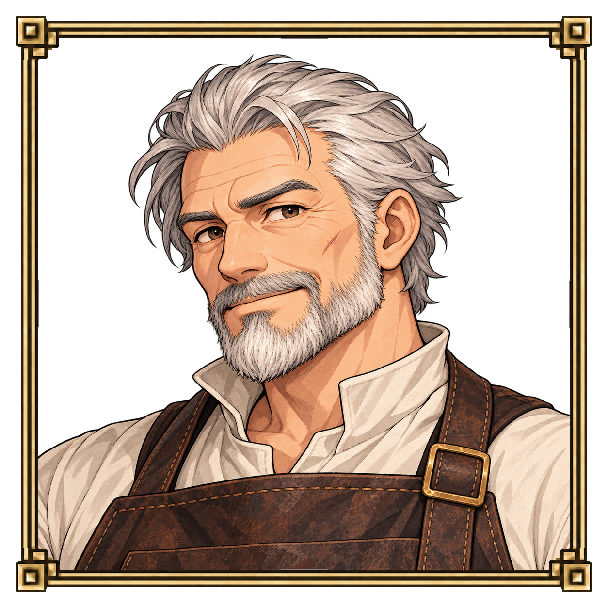
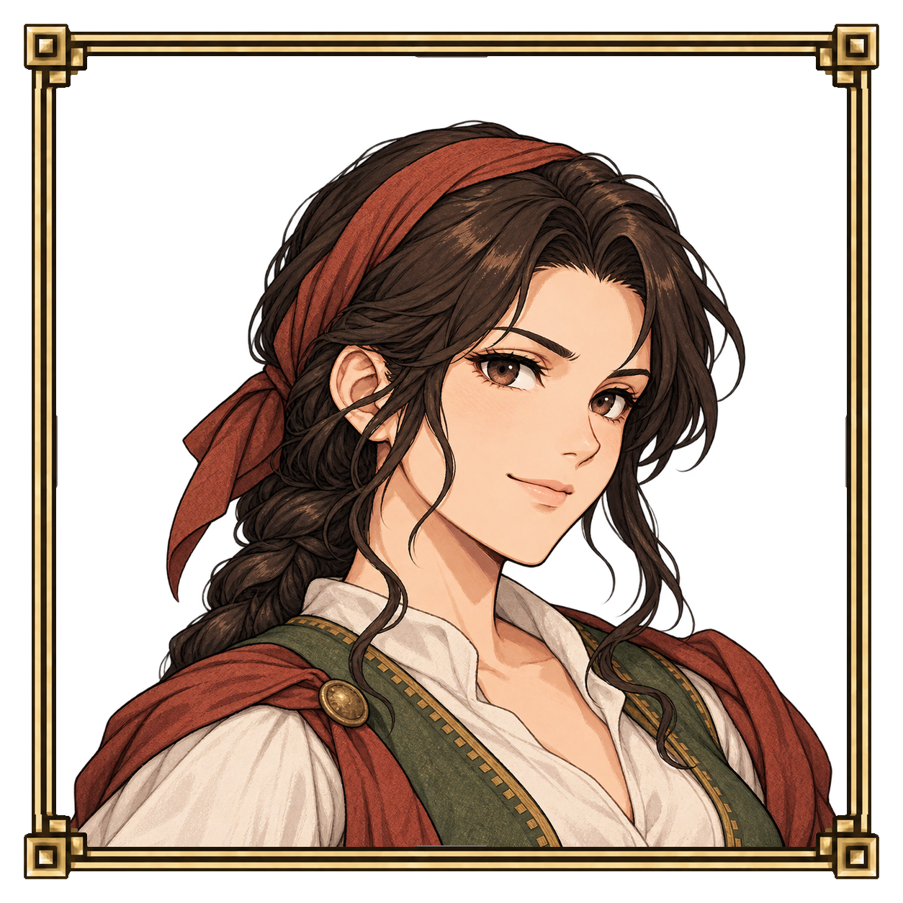
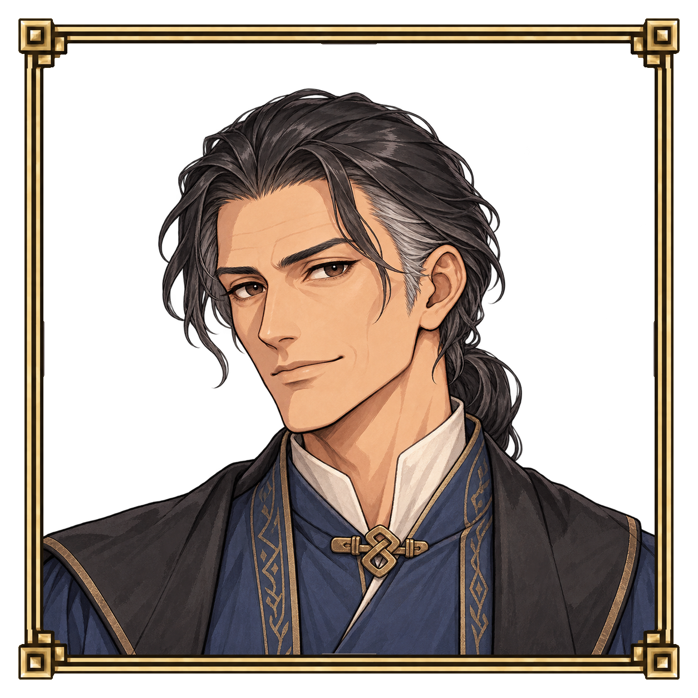

<!doctype html><html lang="ko"><meta charset="utf-8"><meta name="viewport" content="width=device-width,initial-scale=1"><meta name="color-scheme" content="dark"><title>상점 주인 · 세 가지 초상</title><style>*{box-sizing:border-box}body{margin:0;background:#22201c;color:#dfd5c3;font-family:system-ui,sans-serif}main{max-width:1320px;margin:auto;padding:24px}h1{font-size:22px;font-weight:500;margin:0 0 10px}p{font-size:14px;color:#b9ae9b;line-height:1.6;margin:0 0 22px}nav{display:flex;gap:8px;margin:16px 0 24px;flex-wrap:wrap}button,a{font:inherit;color:inherit;border:1px solid #7a6746;background:#302b23;border-radius:2px;padding:8px 16px;cursor:pointer;text-decoration:none}button[aria-pressed=true]{background:#5b4931;border-color:#c4ac78}section{display:grid;grid-template-columns:repeat(3,minmax(0,1fr));gap:18px}article h2{font-size:17px;font-weight:500;margin:0 0 10px}img{width:100%;height:auto;display:block}footer{margin:20px 0;font-size:13px;color:#b9ae9b}.save{display:inline-block;font-size:13px;padding:6px 10px;margin-top:10px}@media(max-width:700px){main{padding:18px}section{grid-template-columns:1fr;gap:30px}}</style><main><h1>상점 주인 · 세 가지 초상</h1><p>기존 프로필과 같은 액자·정사각형 구도입니다. 원본과 128 low를 바꿔 보실 수 있습니다.</p><nav aria-label="초상 표현"><button data-kind="original" aria-pressed="true">원본</button><button data-kind="low" aria-pressed="false">128 low</button><button data-kind="grid" aria-pressed="false">격자 보기</button></nav><section><article data-id="a"><h2>1 · 온화한 노장</h2><a class="save" href="a/original.png" download>이미지 저장</a></article><article data-id="b"><h2>2 · 활달한 상인</h2><a class="save" href="b/original.png" download>이미지 저장</a></article><article data-id="c"><h2>3 · 차분한 상인</h2><a class="save" href="c/original.png" download>이미지 저장</a></article></section><footer>세 안 모두 검토용 시안입니다. 상점 기능 및 게임 연결은 아직 하지 않았습니다.</footer></main><script>document.querySelectorAll('[data-kind]').forEach(button=>button.onclick=()=>{document.querySelectorAll('[data-kind]').forEach(b=>b.setAttribute('aria-pressed',String(b===button)));document.querySelectorAll('[data-id]').forEach(card=>{const file=card.dataset.id+'/'+button.dataset.kind+'.png';card.querySelector('img').src=file;card.querySelector('a').href=file})})</script></html>
